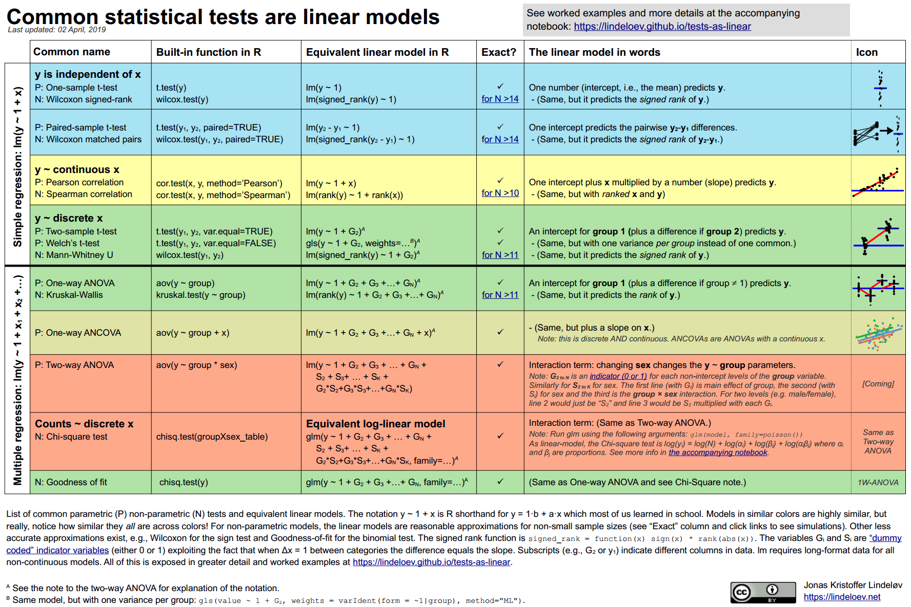

Chapter 2 Statistics and Experimental Design
This section collects resources in General Statistics and Experimental Design - enough to get most people’s projects up and running on the statistical front. Most of these resources assume previous exposure to Statistics, Linux, R, and Python, and may not be the most appropriate material for beginners. If you’re a beginner, my advice is to start with Advanced Statistics or The Epidemiologist R Handbook. For a primer on the mathematical intuition and concepts behind statistical methods, that nonetheless is accessible to everybody, I recommend the NIST/SEMATECH e-Handbook of Statistical Methods.
2.1 General material
Advanced Statistics. The statistics book of the Advance Statistics course at the University of Notre Dame by Zhiyong Johnny Zhang and Lijuan Peggy Wang. Contrary to what the name seems to indicate, the first chapters of this book are accessible to anyone with little knowledge of statistic or R. A good place to start.
NIST/SEMATECH e-Handbook of Statistical Methods. A free online handbook compiled by the National Institute of Standards and Technology (NIST) of the US Department of Commerce. It contains an accessible primer on the mathematical intuition behind most statistical tests and definitions of common statistical terminology. There are links to R code to perform the statistical tests described in the book.
Tutorials and Workshops on R and statistics. One of my favorite sites. It covers the Frequentist and Bayesian of many common statistical test.
StatLect. A sort of Dictionary of Statistical terms. Good to clarify basic questions and familiarize yourself with common Statistical concepts.
Introduction to Probability, Statistics, and Random Processes by Hossein Pishro-Nik.
2.2 Experimental Design
Comparing Means in R. An online course covering most of what needs to be known about Analyses of Variance for Parametric and Non-parametric scenarios. In other words, ANOVA and all its different flavors… To navigate the website, go to the Lessons sections and pick the topic of interest.
STAT 501: Regression Methods. Penn Stat’s Regression Methods course, part of their Master in Applied Statistics. It covers the most relevant topics on Regression, from Simple Linear Regression to Multiple Linear Regression. It also contains a primer on Times Series and other types of Regression like Logistic, Poisson, and Non-Linear Regression.
STAT 504: Analysis of Discrete Data. Also from Penn State’s master in Applied Statistics, this course covers methods for the analysis of discrete and categorical data. These are more specialized analyses and biologists are unlikely to find them in their day to day, but it’s still a good resource to keep in store. STAT 501: Regression Methods is a prerequisite to go through this material.
2.3 Epidemiology
The Epidemiologist R Handbook. A reference handbook with an introduction to R, basic statistics, and useful tools to perform epidemiological data analysis (specifically, from chapter 17 to chapter 28), including Times Series, Outbreak Detection, Epidemic Modelling, Contact Tracing, Survey Analysis, Survival Analysis, and Likert Scales (chapter 33.4). Light on the math side. To get a better grasp of the math behind these methods, check Experimental Design section.
Epidemiology and Public Health with R. A curated list of resources for the R programming language on Epidemiology. Compiled by Virgilio Gómez Rubio from University of Castilla-LaMancha. Although the focus of the list rests on epidemiology, many of these resources can be used in Public Health, Biomedical Research, Pharmaceutical Research, Clinical Trials, Genetics Analysis, Medical Imaging Analysis, Meta-Analysis, Pharmacokinetics Analysis and Survival Analysis.
2.4 Advanced material
- Common statistical tests are linear models (or: how to teach stats) and Common statistical tests are linear models: a work through. Excellent resources that prove the power of Regression Methods and how most experimental designs are, at the end of the day, Regressions.

Advanced Regression Methods. The syllabus of the Advanced Regression Methods course at the University of Alabama by Cheng Hua, Dr. Youn-Jeng Choi, Qingzhou Shi. This material cover more advanced regression methods not covered in the Penn State courses including Curvilinear Regressions methods, Multi-level models, Growth Models, Binary Logistic Regression, Multinomial Logistic Regression, Ordinal Logistics Regression, and Probit Analysis.
Statistics, Data, Science. A site ran Michael Clark that covers Advanced Statistical and Machine Learning methods using R. New material is added sporadically.